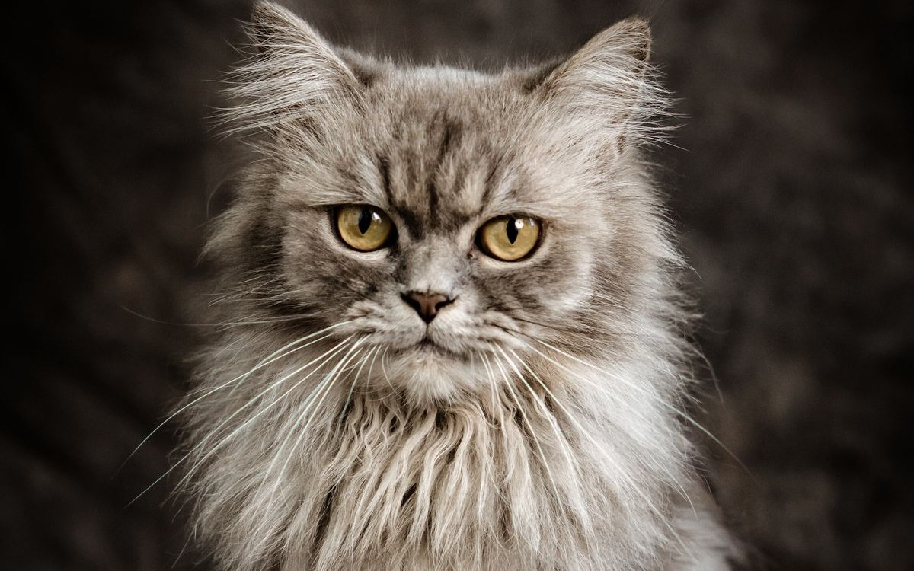

페르시안 고양이 키우기 완벽 가이드 — 성격·수명·질병·털 관리

풍성한 장모와 납작한 얼굴이 매력적인 페르시안은 조용하고 차분한 성격으로 사랑받습니다. 다만 우아한 외모만큼 매일 빗질·눈물 관리가 필요하고, 단두종·유전 질환도 알아둬야 합니다. 입양 전 꼭 확인할 내용을 정리했습니다.
한눈에 보는 페르시안
| 크기 | 중형 (체중 약 3.5~6kg) |
|---|---|
| 수명 | 약 12~16년 |
| 털 | 장모 (매일 빗질 필수) |
| 성격 | 조용하고 차분, 얌전 |
| 관리 난이도 | 높음 (털·눈 관리) |
| 초보자 적합도 | 중간 (관리 각오 필요) |
성격과 기질
페르시안은 조용하고 얌전한 성격으로, 격하게 뛰어다니기보다 편안한 자리에서 쉬는 것을 좋아합니다. 목소리가 작고 차분해 조용한 가정에 잘 맞습니다. 낯가림이 있지만 가족에게는 다정하며, 안정적인 환경을 선호합니다.
입양 전 현실 체크 — 한 달 비용과 손질 시간
페르시안은 외모를 보고 데려왔다가 손질 부담에 지치는 사례가 유독 많은 품종입니다. 아래는 성묘 한 마리를 키울 때 흔히 잡는 대략적인 기준입니다. 지역과 병원·미용실에 따라 편차가 크니 절대 금액이 아니라 감각을 잡는 용도로 봐주세요.
| 사료·간식 | 월 4만~7만원 (건식+습식 병행 기준) |
|---|---|
| 모래·소모품 | 월 2만~4만원 |
| 위생 미용 | 2~3개월에 1회 3만~7만원 → 월 1만~3만원꼴 |
| 병원 적립 | 월 3만~5만원 (연 1회 건강검진·접종 대비) |
| 대략적인 합계 | 월 10만~19만원선 |
처음 들이는 용품 — 화장실, 스크래처, 이동장, 캣타워, 그루밍 도구 일습 — 에는 20만~40만원 정도가 한 번에 나갑니다. 참고로 페르시안은 다리가 짧고 점프력이 좋은 편이 아니어서, 높이만 높은 캣타워보다 단이 촘촘한 계단형 구조가 실제로 훨씬 잘 쓰입니다.
시간은 하루 15~20분을 손질 몫으로 따로 떼어놓아야 합니다. 빗질 10~15분에 눈가 닦기 아침저녁 1분씩이면 대략 맞습니다. "주말에 몰아서"가 통하지 않는 품종이라, 이 15분을 매일 낼 수 있느냐가 사실상 입양 가능 여부를 가릅니다.
반대로 활동량 요구는 낮아 원룸이나 작은 아파트에서도 답답해하지 않고, 혼자 있는 시간에도 비교적 무던해서 8~10시간 출근은 대체로 감당합니다. 다만 여름은 얘기가 다릅니다. 코가 짧아 열을 빼내기 어려우므로 외출 중에도 냉방을 유지하는 편이 안전합니다.
주의해야 할 질병
- 다낭성 신장질환(PKD) — 페르시안 계열의 대표 유전병. 신장에 물혹이 생겨 신부전으로 진행될 수 있습니다. 분양 시 부모묘 검사 이력 확인과 정기 신장 검진이 중요합니다. (고양이 신부전 초기 증상)
- 단두종 관련 안구·호흡기 문제 — 납작한 얼굴 구조상 눈물 과다, 호흡 곤란이 생기기 쉽습니다.
- 모구증(헤어볼) — 장모라 그루밍 시 털을 많이 삼켜 헤어볼이 잘 생깁니다. (고양이 구토·헤어볼 관리)
- 피부·모질 문제 — 털 엉킴 방치 시 피부염으로 이어집니다.
관리 포인트 (털·눈·호흡)
털
매일 빗질이 필수입니다. 며칠만 걸러도 엉켜 피부병·헤어볼로 이어집니다. 기본 도구는 성긴 빗과 촘촘한 빗이 함께 달린 스틸 콤이며, 필요 시 위생 미용을 병행하세요.
눈
눈물이 많아 매일 눈가를 닦아 착색과 피부 염증을 예방하세요.
호흡·더위
단두종이라 더위와 호흡에 취약합니다. 시원한 환경을 유지하고, 호흡이 거칠거나 힘들어하면 진료를 받으세요. 사료·수분 관리는 사료 고르는 기준을 참고하세요.
그루밍 실전 — 도구·주기·비용
페르시안 관리의 8할은 빗질입니다. 도구는 빗살이 성긴 쪽과 촘촘한 쪽이 함께 달린 스틸 콤 하나로 시작할 수 있고, 죽은 속털이 많이 나온다면 슬리커 브러시를 하나 더합니다. 순서는 성긴 빗으로 전체를 훑어 큰 엉킴이 어디 있는지 먼저 찾고, 촘촘한 빗으로 마무리하는 식입니다.
잘 엉키는 자리는 거의 정해져 있습니다.
- 겨드랑이와 뒷다리 안쪽 — 움직일 때마다 마찰이 생겨 가장 먼저 뭉칩니다.
- 귀 뒤와 턱 아래 — 고양이 스스로 그루밍하기 어려운 사각지대입니다.
- 엉덩이와 꼬리 밑동 — 배변 오염까지 겹치면 피부 트러블로 이어집니다.
목욕은 4~8주에 한 번이면 충분합니다. 중요한 건 씻는 쪽이 아니라 말리는 쪽입니다. 겉털만 마르고 속이 젖은 채로 몇 시간이 지나면 피부염으로 번지기 쉬우니, 빗질을 곁들이며 뿌리까지 20~30분에 걸쳐 완전히 말려주세요.
미용 비용은 배·발바닥·항문 주변만 정리하는 위생 미용이 3만~7만원, 전신을 짧게 미는 클리핑이 8만~15만원 선입니다. 고양이는 강아지보다 미용 단가가 높고, 엉킴이 심하거나 많이 버둥거려 작업 시간이 늘면 추가 요금이 붙는 일이 많습니다. 여름에 전신을 미는 선택지도 있지만, 실내 냉방이 되는 집이라면 위생 미용만으로도 대체로 충분합니다.
눈가는 미지근한 물에 적신 거즈로 눈 안쪽에서 바깥쪽 방향으로 닦아냅니다. 눈물은 마르면 딱딱하게 굳어 잘 지워지지 않으니 아침저녁 두 번이 가장 손이 덜 갑니다. 이미 갈색으로 착색된 부분은 닦는다고 지워지지 않으며, 새 눈물이 고여 있지 않게 유지하는 것이 최선입니다.
빗질과 발톱 손질에 적응시키기
페르시안은 성격이 얌전해서 처음에는 순순히 응하는 편입니다. 문제는 그다음입니다. 한 번 아프거나 무서운 기억이 생기면 빗만 꺼내도 숨어버리는 상태가 되고, 그때부터는 매일 해야 하는 일이 매일의 실랑이가 됩니다. 초반에 "손질은 나쁜 일이 아니다"를 심어두는 게 그래서 중요합니다.
- 짧게, 자주. 한 번에 20분보다 5분씩 세 번이 훨씬 잘 통합니다.
- 좋을 때 끝내기. 몸을 뒤척이기 시작하면 이미 늦습니다. 아직 얌전할 때 먼저 마치고 간식을 주면 "끝 = 좋은 것"으로 기억에 남습니다.
- 발톱은 하루에 두세 개만. 네 발을 한자리에서 끝내려 하지 마세요. 며칠에 나눠도 아무 문제 없습니다.
- 붙잡고 억지로 하지 않기. 힘으로 제압한 경험은 회피 학습으로 고스란히 쌓입니다.
오늘 꼭 풀어야 할 엉킴이 있더라도, 다 풀겠다는 목표는 접고 한 덩어리만 처리한 뒤 멈추세요. 며칠에 나눠 푸는 편이 결과적으로 더 빠릅니다.
나이대별 관리 포인트
새끼 고양이 (~12개월)
코가 납작해 밥을 잘 집어 먹지 못하는 아이가 있습니다. 깊은 그릇 대신 넓고 얕은 접시를 쓰고 알갱이가 작은 자묘용 사료를 고르면 한결 나아집니다. 눈물·콧물이 잦고 재채기가 이어진다면 단순한 눈물 문제가 아니라 상부호흡기 감염일 수 있으니 진료를 받아보세요. 무엇보다 이 시기에 빗질과 발톱 손질에 적응시켜 두는 것이 앞으로 15년을 좌우합니다.
성묘 (1~7세)
원래 활동량이 적은 품종이라 체중이 조용히 늘어납니다. 갈비뼈가 가볍게 만져지는지 월 1회 확인하고, 애매하면 비만도 자가진단으로 점검해 보세요. 다낭성 신장질환은 보통 생후 12개월 이후 초음파로 확인할 수 있고 유전자 검사도 있으니, 부모묘 이력이 불확실하다면 한 번 확인해 두는 편이 마음이 편합니다.
노령기 (8세~)
관절이 뻣뻣해지면서 스스로 하는 그루밍이 줄어드는 것이 장모종 노묘의 특징입니다. 엉덩이 주변부터 갑자기 엉키기 시작한다면 나이 신호로 읽고 보호자 빗질 비중을 늘려주세요. 신장 수치는 연 2회 확인하는 것이 좋고, 화장실 턱을 낮춰 드나들기 편하게 바꿔주면 실수가 줄어듭니다. 물을 부쩍 많이 마시거나 체중이 서서히 빠진다면 지켜보지 말고 병원에서 확인하세요. (고양이 나이 계산기)
초보 집사가 자주 하는 실수 5가지
- 엉킴을 가위로 처리한다 — 피부 절상 위험이 큽니다. 빗과 손가락, 그래도 안 되면 클리퍼가 순서입니다.
- 목욕 후 대충 말린다 — 페르시안에게 가장 흔한 피부염 원인입니다. 속털까지 마르는 데는 생각보다 오래 걸립니다.
- 깊은 밥그릇을 쓴다 — 얼굴이 그릇에 파묻히고 수염이 계속 벽에 닿아 먹기를 꺼립니다. 입이 짧다고 오해하기 쉬운데 그릇만 바꿔도 해결되는 경우가 있습니다.
- 여름에 냉방 없이 외출한다 — 고양이가 입을 벌리고 헐떡이는 것은 정상이 아닙니다. 강아지와 달리 고양이의 개구호흡은 응급 신호에 가까우니 즉시 병원으로 가세요.
- 헤어볼 구토를 당연하게 넘긴다 — 장모종이라 헤어볼이 잦은 것은 맞지만, 주 2회 이상 반복되거나 식욕 저하·변비가 함께 온다면 다른 원인일 수 있습니다. (고양이 구토 체크)
이런 분께 잘 맞아요
- 조용하고 차분한 고양이를 원하는 분
- 매일 빗질·눈 관리에 시간을 낼 수 있는 분
- 유전 질환 관리와 정기 검진에 신경 쓸 수 있는 분
자주 묻는 질문 (FAQ)
Q. 털 관리가 많이 힘든가요?
장모종이라 매일 빗질이 필수입니다. 며칠만 걸러도 엉켜 피부병·헤어볼이 생기니 꾸준한 관리가 반드시 필요합니다.
Q. 유전병을 조심해야 하나요?
다낭성 신장질환(PKD)이 대표적입니다. 분양 시 부모묘 검사 이력을 확인하고 정기 신장 검진을 받는 것이 좋습니다.
Q. 눈물이 많은데 괜찮나요?
납작한 얼굴 구조상 눈물이 넘치기 쉽습니다. 매일 눈가를 닦아 관리하고, 호흡기 증상이 동반되면 진료를 받으세요.
Q. 한 달 유지비는 어느 정도 잡아야 하나요?
사료·모래·위생 미용·병원 적립을 합쳐 월 10만~19만원선을 기준으로 잡으면 무난합니다. 여기에 첫 용품 비용 20만~40만원이 한 번 들어갑니다. 지역과 병원에 따라 차이가 큽니다.
Q. 밥을 흘리면서 먹는데 문제가 있는 걸까요?
코가 짧고 얼굴이 납작해 깊은 그릇에서 사료를 집기 어려운 구조입니다. 넓고 얕은 접시로 바꾸면 대부분 나아집니다. 그래도 못 먹거나 삼킬 때 켁켁거린다면 진료를 받아보세요.
Q. 매일 빗질할 자신이 없는데 짧게 밀면 안 되나요?
전신 클리핑으로 관리 부담을 줄이는 선택지는 있습니다. 다만 밀어도 자란 털은 다시 엉키므로 빗질을 아예 없앨 수는 없고, 2~3개월마다 미용비가 계속 듭니다. 매일 10분이 어렵다면 애초에 단모종을 고려하는 편이 서로에게 낫습니다.